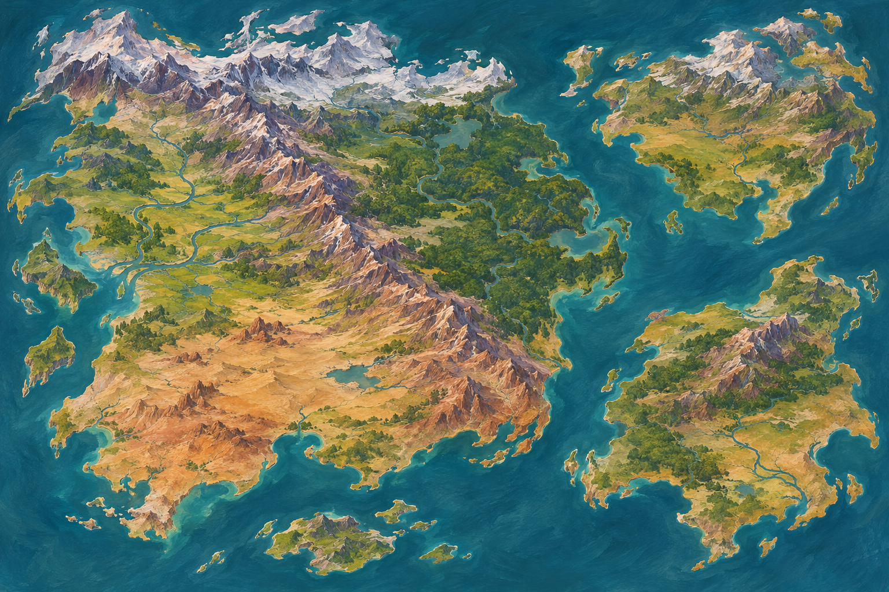

01—02 / GEOGRAPHY STUDIES
Room for more stories.

Proposed coastlines and terrain. No political borders, settled distances or official continent names.
All new geography, scene events, architecture and props are proposals. Ambrel is an established city name; its appearance here is exploratory. Alignments are philosophies, not five exclusive countries. The regional map is an independent study, not an exact crop of the world map.
THE COLLECTION
Choose what belongs.
Open a painting for its campaign use and review question. Notes stay in this browser; export them to share in our chat. “Keep” records a visual preference and does not automatically make a proposal canon.